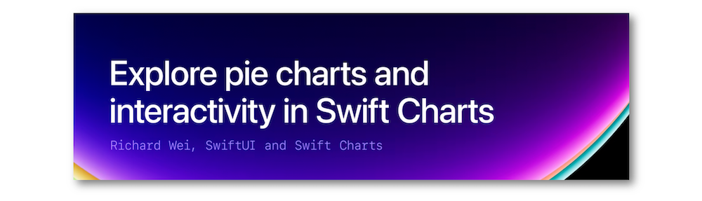
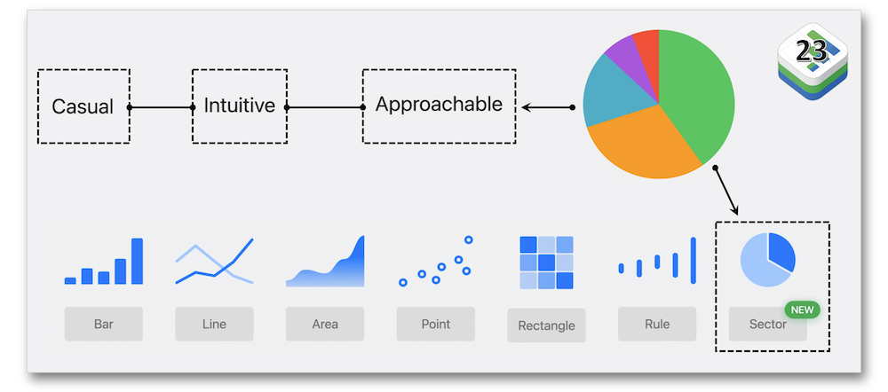
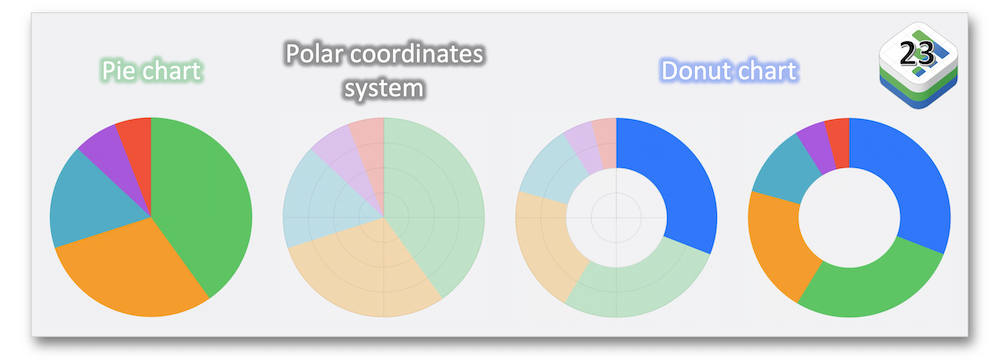
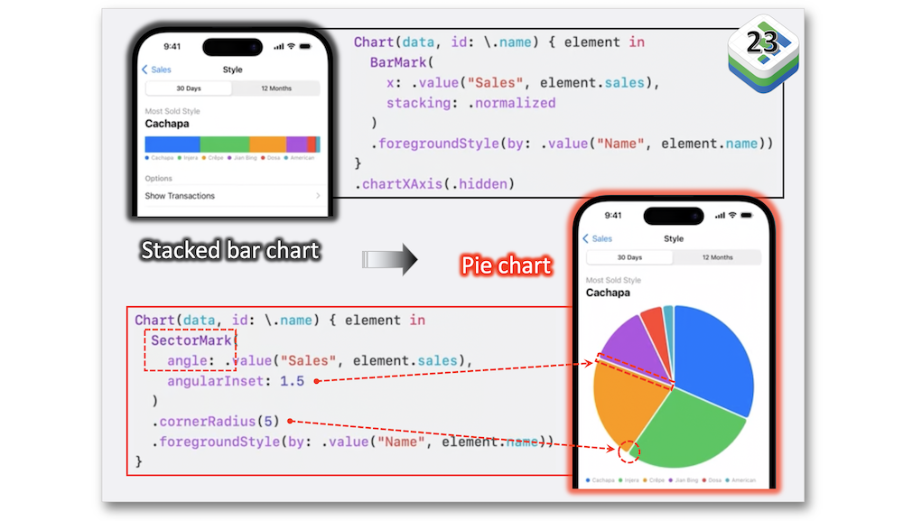
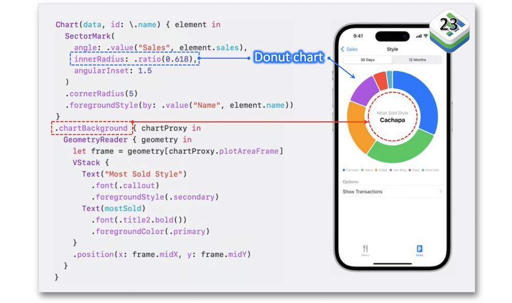
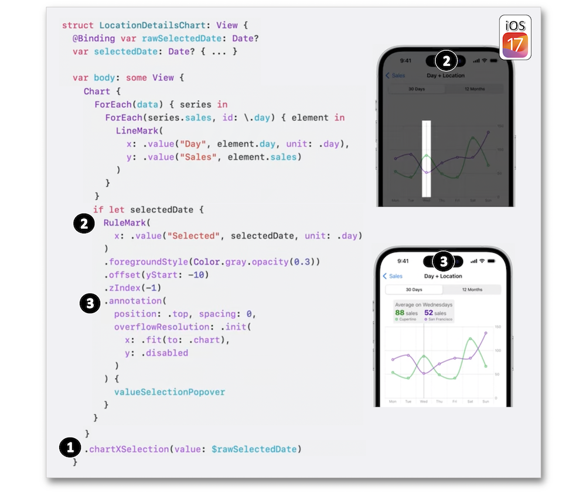
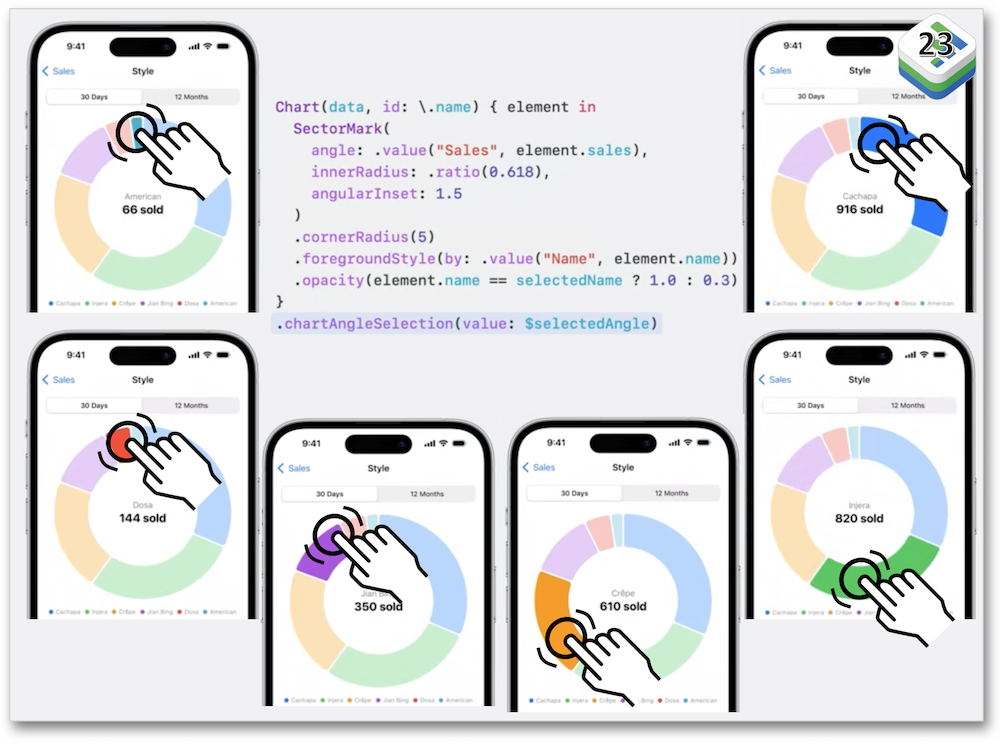
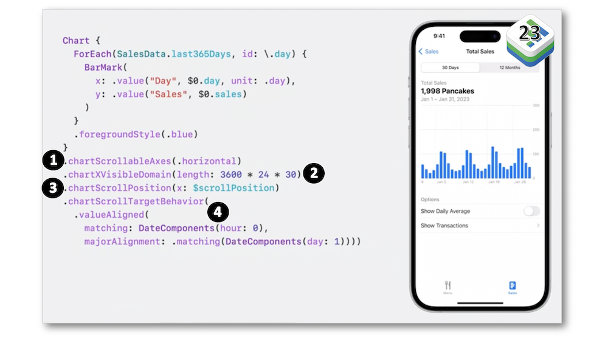

WWDC 2023: Explore pie charts and interactivity in Swift Charts
Find hereafter a detailed summary of a video that belongs to a taxonomy of some WWDC footages.
The original video is available on the Apple official website (session 10037).

"Swift Charts has come full circle: Get ready to bake up pie and donut charts in your app with the latest improvements to the framework. Learn how to make your charts scrollable, explore the chart selection API for revealing additional details in your data, and find out how enabling additional interactivity can make your charts even more delightful."
Hereafter, the underlined elements lead directly to the playback of the WWDC video at the appropriate moment.
New chart #
With strong arguments regarding its usage, the pie chart joins the Swift Charts family along with the new SectorMark type.

Through the polar space, a pie chart can turn into a donut chart for an original rendering.

Few lines of code are necessary to convert a simple chart into a basic pie chart.

And the way to get a donut chart is just as simple as the implemented modifications hereabove.

Selection #
To render a popover on top of a selection indicator, follow the milestones hereafter by keeping in mind that the chartOverlay modifier is replaced by the chartXSelection modifier as an iOS 17 new feature:
-
Use the new selection modifier to get the X-axis raw value ⟹ 🎬
-
Create a rule mark as a selection indicator for the taken value ⟹ 🎬
-
Use an annotation for displaying the sought popover ⟹ 🎬

Instead of a single value, a range can also be selected through dedicated gestures according to the system you're working on while implementing customed gestures as well.
Pie charts and donuts charts follow the exact same rules for providing the above detailed selection.

This kind of selection is also supported on macOS using a hover gesture as default instead.
Scrolling #
iOS 17 has brought many enhancements for scrolling with Swift Charts and the example detailed in this part of the video highlights few of them through different steps:
-
Enable scrolling ⟹ 🎬
-
Plan the range of data to be visible on the X-axis ⟹ 🎬
-
Store the selected data to a binding ⟹ 🎬
-
Adapt the scroll behavior according to the expectations ⟹ 🎬
